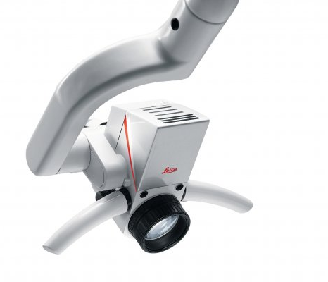
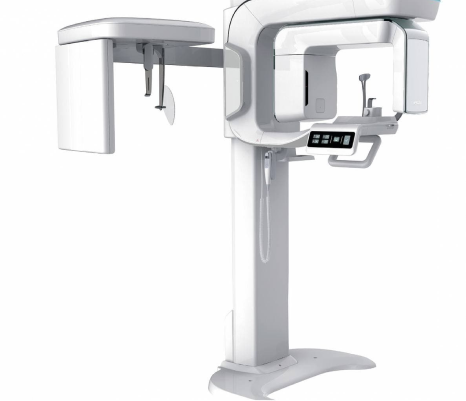
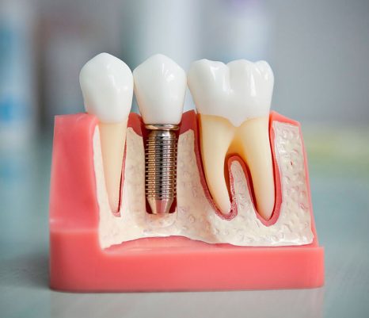
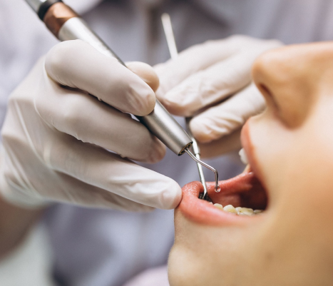
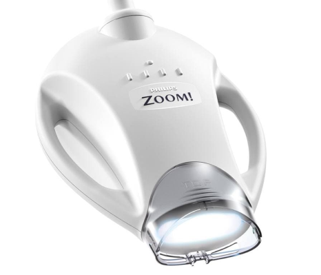
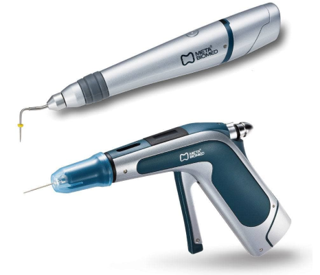

Для пациентов
-

Лечение под микроскопом
Зуб человека, являясь миниатюрной структурой человеческого организма, довольно вариабелен в своём строении и особенностях анатомии корневых каналов. Это означает, что невооруженному человеческому взгляду невозможно уловить все нюансы корневой системы при эндодонтическом лечении. Нельзя быть уверенным в непрерывности уступа и щадящем препарировании при подготовки зуба под коронку или винир, а также, при замене пломбы, бережном удалении старого материала, не трогая ткани зуба. Вот почему, безусловно, применение операционного дентального микроскопа является обязательным при любой стоматологической манипуляции. Этому правилу беспрекословно следуют все специалисты стоматологических клиник Родной Город, работая на самых современных микроскопах всемирно известного производителя Leica, потому что качество работы для нас является приоритетом.
-
3D Компьютерная томограмма
Без рентгенологических исследований в современной стоматологии никуда. Невозможно спланировать лечение, также как и проконтролировать результат выполненной работы. Вот почему мы используем в своей практике не один и даже не два, а целых три аппарата для всех существующих видов рентгенодиагностики в стоматологии на данный момент. Высокое разрешение полученной компьютерной томограммы обеспечивает максимальную точность диагностики, а наличие цефалостата позволяет провести полную диагностику перед ортодонтическим лечением. Самое же последнее поколение низкодозного оборудования способствует получению минимального облучения, сравнимого с одним трёхчасовым перелётом на самолете. Неоспоримое преимущество - это наличие всего этого арсенала в стенах клиник Родной Город, что экономит время и пациента, и врача, гарантируя наилучший результат проведённого лечения.
 -

Имплантация зубов
Самый лучший имплант - это тот, который удалось не поставить. Врачи стоматологических клиник Родной Город борются за сохранение ваших зубов до последнего, но иногда бывают ситуации, когда и нам не под силу сотворить чудо, потому что ресурс зуба был полностью исчерпан. В этом случае на помощь приходит такая методика, как имплантация. Суть ее в том, что в кость, в месте утерянного зуба, вкручивают титановый винт, достигая его первичной стабилизации за счёт наличия резьбы. Далее, в течение нескольких месяцев, в микропространства на поверхности имплантата прорастает собственная кость, за счёт ее шероховатости. Тем самым достигается вторичная стабилизация. Затем на установленный винт устанавливается постоянная коронка. Используя комплектующие именитых мировых производителей и скрупулёзно следуя протоколам установки, риск неудачи и осложнений сводится к минимуму, а использование только оригинальных запчастей на этапе протезирования, обеспечивает продолжительный благоприятный прогноз данной процедуры.
-
Пьезотом
Одной из новых стоматологических методик является использование пьезотома. Принцип действия основан на излучении прибором ультразвуковой вибрации. Колебания передаются на специальную насадку, направленную непосредственно на ткани ротовой полости. Степень воздействия регулируется. Система широко используется в профессиональной гигиене, когда ультразвуковым скейлером снимаются твердые отложения с поверхности зубной эмали, без вреда для зубов. Передовой инновацией стало изменение амплитуды колебаний и возможность их настройки для работы с тканями различной плотности. В настоящее время пьезохирургия в стоматологии – это идеальная возможность проведения операции с точнейшим воздействием, без скальпеля и бормашины, что позволяет добиться минимальной травматизации, а значит скорейшего заживления. Рабочая часть (наконечник) аппарата оснащена различными типами насадок, что облегчает оперативное вмешательство даже в труднодоступных областях ротовой полости.
 -

Лампа для отбеливания «ZOOM 4»
Офисное отбеливание эмали зубов, являясь косметической процедурой направленной на улучшение общего вида улыбки, становится довольно востребованной в последнее время. Наличие множества систем и производителей ламп для отбеливания на рынке стоматологических услуг может вызвать растерянность. Но RGClinic, бескомпромиссно, в этом вопросе выбирает только лучшую и самую безопасную в мире, на данный момент, систему отбеливания зубов ZOOM4 WhiteSpeed Philips. Обученные специалисты клиник Родной Город, используя только оригинальный гель для отбеливания, помогут вам добиться желаемого результата всего за 2 часа и без вреда для зубов.
-
Навигационная хирургия
Навигационная хирургия - это новейшая технология, которая ещё пока не получила широкого распространения, но тем не менее, доступная для пациентов стоматологических клиник Родной Город. Когда необходимо установить имплант в узкий участок кости или установить несколько имплантов и все они должны быть параллельны, находясь в одной плоскости. Либо необходимо обойти мимо, не задев, анатомическое образование (сосуд, нерв или верхнечелюстная пазуха). Даже опытному имплантологу не всегда под силу выполнить эти задачи. В этом случае на помощь приходит навигационная хирургия. Суть этой технологии заключается в том, что сопоставляется 3D модель костных структур челюсти пациента, полученной на компьютерном томографе, и отсканированный 3D слепок специальным сканером во рту или с гипсовой модели. Далее врач на специальной программе создаёт пластиковый шаблон с отверстиями для сверления кости для импланта под уже заложенным направлением и углом. Таким образом, удаётся установить имплант в оптимальную позицию минуя опасные зоны, что в дальнейшем благоприятно скажется на долгосрочном прогнозе его использования и снизит риск получить неприятные осложнения.

-

Современные протоколы эндодонтического лечения
Являясь одним из самых важных, раздел эндодонтии не стоит на месте и совершенствуется каждый год. Поэтому специалисты стоматологических клиник Родной Город непрерывно находятся в процессе обучения, посещая все стоматологические конгрессы, выставки семинары, чтобы быть в курсе всех актуальных технологий и протоколов лечения. На помощь нашим специалистам приходят самое современное оборудование и материалы, начиная с изоляции операционного поля коффердамом, заканчивая обурационной системой для 3D пломбирования корневых каналов, которая позволяет надёжно загерметизировать канал и каждое его ответвление. Биокерамические материалы, используемые в нашей клинике, в свою очередь, расширяют возможности для сохранения зубов при перелечивании каналов, а также сохранения нерва живым в случаях вскрытия пульпарной камеры.
-
Неинвазивное лечение кариеса
Для пломбирования зубов после лечения кариеса мы применяем исключительно светоотверждаемые композитные материалы последнего поколения.
Достижения современной стоматологии позволяют эффективно лечить кариес на ранних этапах (Стадии пятна) без препарирования методом «Icon».
Преимущества лечения кариеса препаратом “Icon”:
возможность остановить кариес на ранних стадиях;
сохранность здоровых тканей-зуб не подвергается механической обработке;
процедура абсолютно безболезненна и не требует анестезии;
эмаль зуба сохраняет здоровый естественный вид;
подходит для лечения кариеса пациентам с брекетами.